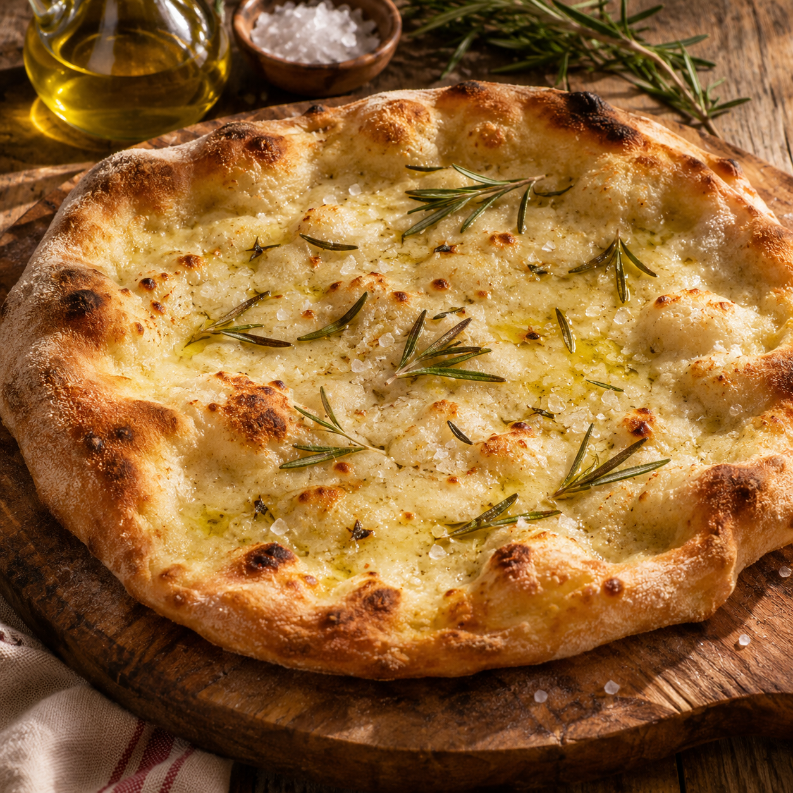

Pezzo di pizzo

Desctizione:
Hai mai avuto quella voglia di farti un pezzo ma doverti accontentare con della pizza? Beh ora avrai modo di preparare un autentico pezzo di pizzo!
Ingredienti:
- 500 g di farina tipo 0 (o W260/280)
- 375 ml di acqua fredda (75% di idratazione)
- 4 g di lievito di birra fresco (o 1,5 g secco)
- 12 g di sale fino
- 15 g di olio extravergine d'oliva
- Sale grosso e altro olio per la superficie
- Impasto: Mescola acqua e lievito alla farina, poi unisci sale e olio
- Lievito: Fai 3 pieghe ogni 20 minuti, poi riposo in frigo per 24 ore.
- Stesura: Dividi in due, fai raddoppiare e stendi con i polpastrelli.
- Finitura: Condisci la superficie con un velo d'olio e sale grosso
- Cottura: Inforna al massimo del calore alla base per 10 min, poi al centro.
Home